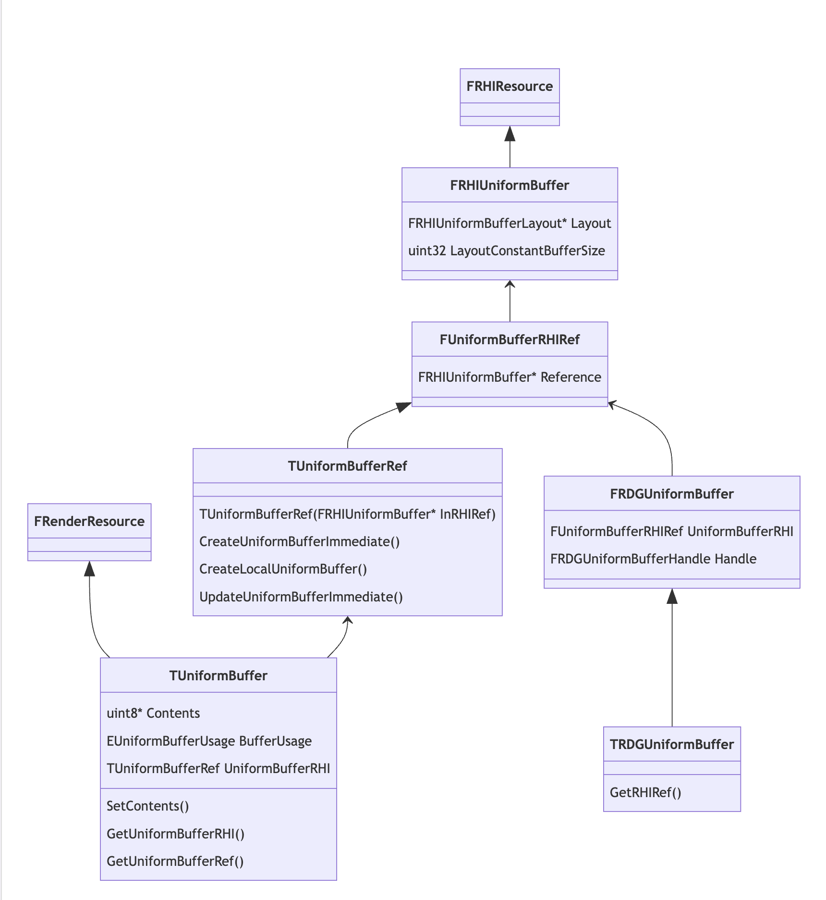

# UnifomBuffer
Uniform Buffer 涉及了几个核心的概念，最底层的是 RHI 层的 FRHIUniformBuffer，封装了各种图形 API 的统一缓冲区（也叫 Constant Buffer）

如果项目处于开发阶段，最好将 Shader 的编译选项改成 Development，可以通过修改 Engine\Config\ConsoleVariables.ini


Uniform Buffer 涉及了几个核心的概念，最底层的是 RHI 层的 FRHIUniformBuffer，封装了各种图形 API 的统一缓冲区（也叫 Constant Buffer）

如果项目处于开发阶段，最好将 Shader 的编译选项改成 Development，可以通过修改 Engine\Config\ConsoleVariables.ini
Natsuneko